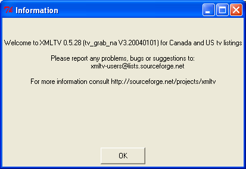
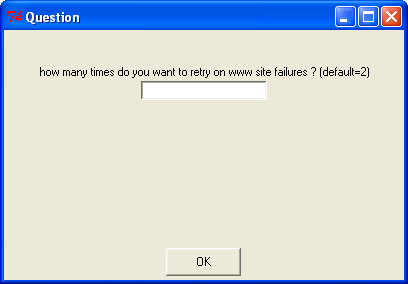
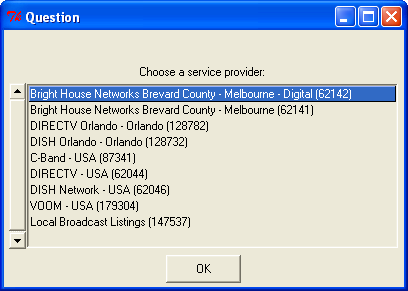
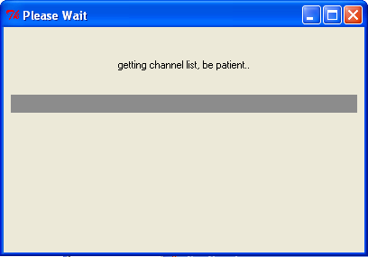
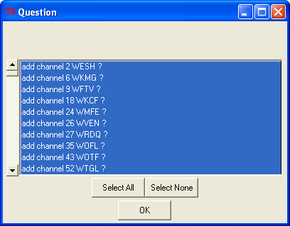
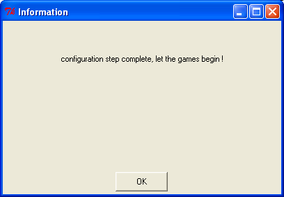

Home | README | FAQ | User Guide | Look and Feel Guide | Timezones | Developers | Design Document | Linux XMLTV Install | Contributors
Back to Screen Shots
FreeGuide Screen Shots - XMLTV Configuration
Contents
Screen 1 - Welcome

Screen 2 - Enter Number of Retries

Screen 3 - Enter Number of Seconds Between Retries
Screen 4 - Enter Postal Code
Screen 5 - Getting List of Providers

Screen 6 - Choose Provider

Screen 7 - Getting Channel List

Screen 8 - Select Channels

Screen 9 - Configuration Complete
